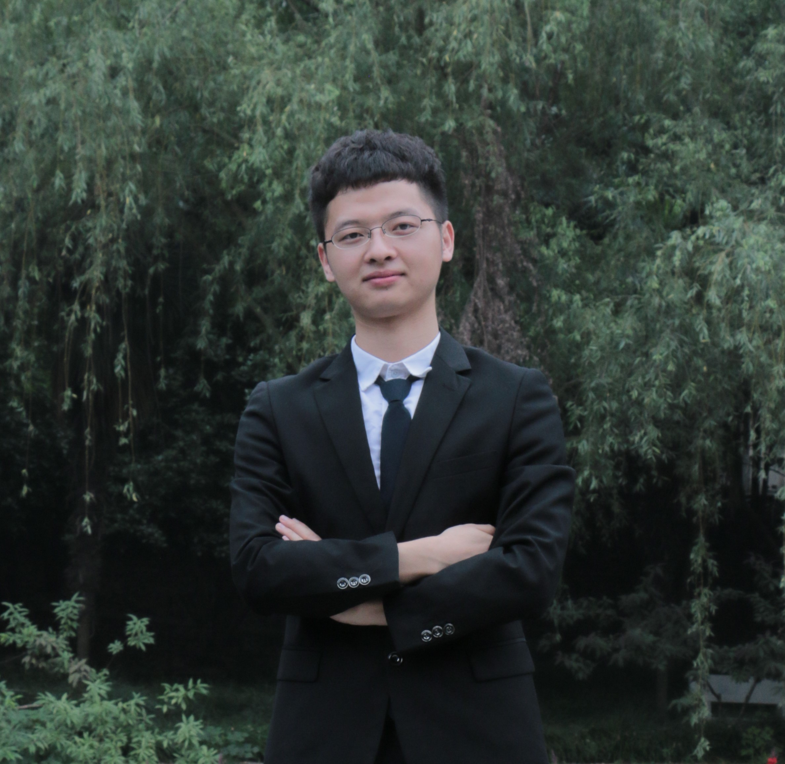

Current group members
Faculty

Yanhua Li
Associate Professor
Ph.D., CS, University of Minnesota, Twin Cities, 2013
Ph.D., ECE, Beijing U of Posts and Telecommunications, 2009
Current PhD Students

Zhiyang Zhang
PhD Student, Data Science, WPI
M.S., Statistics, University of Chinese Academy of Sciences, 2020
B.S., Mathematics, Northeastern University, 2017
Fanxi Kong
PhD Student, Data Science, WPI
M.S., Applied Statistics, Shanghai Jiaotong University, 2024
B.S., Statistics, Xiamen University, 2022

Mingzhi Hu
PhD Student, Data Science, WPI
MS, Applied Statistics, Syracuse University, 2018
BE, Applied Mathematics, Dalian University of Technology, 2016
Past PhD Students

Menghai Pan
Now at VISA research lab.
WPI Computer Science PhD (2021)
BE, Huazhong University of Science and Technology, 2016

Guojun Wu
Now at ByteDance.
WPI Data Science PhD (2021)
BE, Beihang University, 2014
Yingxue Zhang
Now, Tenure Track Assistant Professor in CS department at SUNY Binghamton University (since Fall 2022).
Ph.D. Data Science, at WPI (2022)
ME, Financial Engineering, Steven Institute of Technology, 2018
BE, Computer Science, Shanghai Jiaotong University, 2016

Xin Zhang
Now, Tenure Track Assistant Professor in CS department at San Diego State University (since Fall 2023).
Ph.D., Data Science, at WPI (2023)
BS, Applied Math, University of Illinois Urbana-Champaign, 2017

Huimin Ren
Now, at Li Auto Inc.
PhD Student, Data Science, at WPI (2022)
MS, Data Science, WPI, 2018
BE, Finance, Southwestern University of Finance and Economics, 2016
Past Master/Intern Students
- Mingzhou Yang (Visiting student at WPI, MS from Xi'An Jiaotong University), Summer 2019 → Now, PhD student at University of Minnesota, Twin Cities.
- Yichen Ding (MS Student with WPI), Summer 2017 → Then, a PhD student at University of Iowa.
- Shijian Li (MS Student with WPI), Summer and Fall 2016 → Then, a PhD student at WPI.
- Ziye Zhou (PhD Student with Chinese University of Hong Kong), Fall 2014 → Researcher, Lenovo Research at Hong Kong.
- Ye Ding (PhD Student with Hong Kong University of Science and Technology), Summer 2014 → Research associate at Hong Kong University of Science and Technology.
- Kam-Lam (Antony) Chan (B.Sc. with City University of Hong Kong), Summer 2014 → Contract Systems Specialist at The Bank of East Asia, Limited, Hong Kong.
- Fei Wang (M.Sc. with The University of Hong Kong), Fall 2013 → Software Engineer at Facebook, USA.